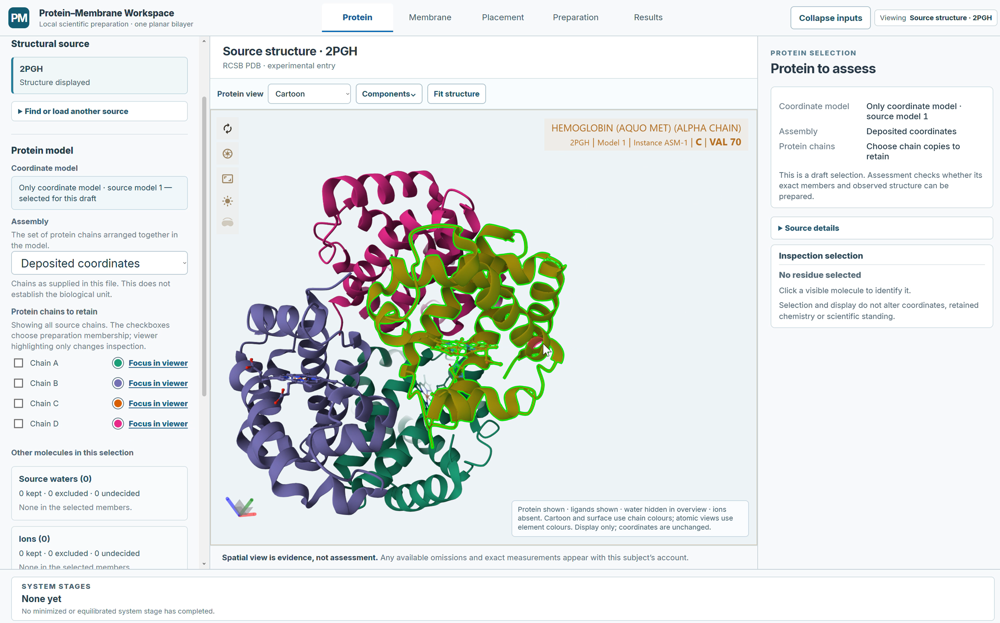

Protein–Membrane Workspace
Uma aplicação científica que conecta a preparação de sistemas moleculares, sua construção, minimização e inspeção.
Explore o projetoACADD — Descoberta Autônoma de Fármacos Assistida por Computador
Um sistema autônomo de descoberta computacional concebido para aprender com evidências moleculares, escolher investigações úteis e adaptar sua busca aos objetivos e ao orçamento computacional definidos pelo pesquisador.
Comece pelos seus compostos e resultados existentes ou explore bibliotecas químicas permitidas. O ACADD conecta relações moleculares às evidências disponíveis para identificar o que vale a pena investigar a seguir e muda de direção à medida que chegam novos resultados.

O objetivo é ajudar equipes de pesquisa a explorar mais possibilidades científicas e direcionar cálculos e experimentos de alto custo às decisões que fazem diferença.
Mecanismos centrais implementados. A verificação controlada e a integração das campanhas estão em andamento.
Uma modificação molecular pode melhorar uma propriedade e piorar outra. Uma predição promissora de afinidade de ligação pode deixar em aberto a resposta biológica ou a solubilidade. Uma descoberta útil em uma série química pode não se aplicar à seguinte.
Os pesquisadores precisam decidir quais evidências anteriores se aplicam, o que continua incerto e se outra investigação mudaria a direção do trabalho. Também precisam escolher entre refinar uma série conhecida, examinar um arcabouço molecular diferente ou interromper os gastos com um caminho pouco produtivo.
O ACADD foi concebido para apoiar esse raciocínio integrado em um conjunto muito maior de possibilidades.
A pergunta central é o que devemos aprender a seguir para avançar rumo ao objetivo de descoberta a um custo justificável.
Substitui-se um grupo químico e testa-se o análogo.
Qual incerteza vale investigar primeiro?
Imagine que uma equipe substitua um grupo químico e teste o análogo resultante. A atividade aumenta, mas a solubilidade cai. O próximo desenho depende da possibilidade de preservar o ganho de atividade e recuperar a solubilidade.
O ciclo parte do objetivo e das evidências disponíveis. Cada investigação pode melhorar a avaliação de um composto e orientar a escolha dos próximos estudos.
Relacionar estruturas, observações e incerteza.
Alterações moleculares, comparações e lacunas de evidência.
Comparar consequências, dependências e custo total.
Obter resultados e preservar seu contexto científico.
Novas evidências mudam o que vale investigar a seguir.
Especifique o alvo, as propriedades moleculares exigidas, as evidências necessárias para sustentar a escolha de um candidato, o escopo químico e os métodos permitidos e o orçamento computacional.
O objetivo pode exigir várias propriedades no mesmo composto. Uma estimativa favorável de ligação, por si só, não cumpre um objetivo de descoberta mais amplo.
Utilize compostos da empresa ou do grupo de pesquisa e seus resultados experimentais ou computacionais, incluindo descobertas desfavoráveis e incertas.
Quando as evidências forem escassas, comece por estruturas de bibliotecas permitidas e selecione investigações iniciais informativas. Medições experimentais existentes são dados de entrada úteis. A exploração computacional pode começar sem exigir, em todos os casos, um novo resultado experimental de referência.
Analise modificações moleculares, características espaciais, forma, eletrostática e interações com o alvo disponíveis.
Conecte essas relações às observações das propriedades pertinentes, preservando as condições, a origem e a incerteza de cada resultado. A análise das informações já disponíveis é reutilizada. Uma medição ausente continua sendo uma questão em aberto.
Busque candidatos, aplique transformações moleculares sustentadas pelas evidências, compare compostos relacionados ou selecione um método que responda a uma lacuna específica de informação.
Procure candidatos estruturalmente diversos e investigações cientificamente complementares, incluindo comparações que possam colocar à prova uma relação útil.
Compare o que as investigações propostas poderiam revelar, como isso afetaria as escolhas posteriores e quanto custaria todo o trabalho necessário.
Reutilize o trabalho concluído, leve em conta resultados pendentes e etapas de preparação compartilhadas e execute os cálculos aplicáveis às investigações selecionadas. Trabalhos independentes podem avançar juntos quando os recursos e as dependências científicas permitem.
Incorpore os resultados efetivamente recebidos, atualize as predições e relações afetadas e reavalie as próximas investigações.
Um resultado pode reforçar uma direção promissora, revelar uma limitação ou redirecionar a busca. O trabalho cuja base científica continua válida pode prosseguir.
O modelo de conhecimento do ACADD conecta diferentes perspectivas complementares da estrutura molecular. Cada uma oferece uma forma de formular uma pergunta e avaliar se uma informação pode se aplicar a outro composto.
| Relação molecular | Pergunta científica |
|---|---|
| Transformações químicas locais | Quais substituições parecem úteis e em quais ambientes moleculares? |
| Farmacóforos | Arcabouços moleculares diferentes podem apresentar um arranjo relevante de características químicas? |
| Forma e eletrostática | As semelhanças espaciais e de distribuição de carga sustentam uma comparação útil? |
| Interações com o alvo | O que as poses disponíveis em relação ao alvo revelam sobre os contatos envolvidos? |
A semelhança estrutural orienta comparações. As evidências sobre uma propriedade específica vêm de observações como uma pontuação de docking, um cálculo de energia livre de ligação ou uma medição experimental.
Suponha que a mesma substituição esteja associada a resultados favoráveis em um ambiente local e desfavoráveis em outro.
O sistema pode preservar essa distinção, propor moléculas relacionadas e identificar uma comparação que esclareça onde a descoberta se aplica.
Uma investigação pode envolver vários cálculos, pois responder à pergunta exige uma comparação. Seu resultado informa uma estimativa do efeito da relação e da incerteza associada em um contexto definido.
Quando há respaldo, esse conhecimento pode informar predições sobre outros compostos.
Um bom candidato pode revelar uma relação útil. Uma relação útil pode sugerir um próximo candidato melhor.
A substituição é conhecida. Seu efeito em cada ambiente continua sendo uma questão em aberto.
Efeito favorável observado
As previsões relacionadas mudam em uma direção favorável.
Efeito desfavorável observado
As previsões relacionadas mudam em uma direção desfavorável.
Um arcabouço diferente pode permitir uma comparação quando o ambiente local relevante e as evidências sobre a propriedade se aplicam.
Um ambiente diferente ou não estudado permanece não resolvido quando as evidências disponíveis não sustentam a transferência.
O cálculo mais barato nem sempre leva ao caminho mais econômico. Uma investigação cara pode evitar gastos maiores adiante. Um cálculo barato pode acrescentar pouco ao que já se sabe.
O ACADD avalia os resultados possíveis, as atualizações de conhecimento que produziriam e o trabalho posterior que essas atualizações poderiam justificar.
Ele compara conjuntos úteis de investigações, considerando evidências complementares, sobreposição de informações e trabalho pendente.
Um análogo proposto tem evidências promissoras de ligação ao alvo, mas a solubilidade pode determinar se ele avança.
Neste exemplo, um preditor de menor custo se aplica à química e às condições consideradas. Sua estimativa ajuda a priorizar candidatos, enquanto um refinamento adicional da ligação deixaria a pergunta decisiva em aberto.
O sistema pode investigar primeiro a solubilidade.
Trabalho independente em outra série pode prosseguir enquanto essa questão é resolvida.
Evidências promissoras de ligação · solubilidade não resolvida
A estimativa sustenta a priorização. Verificar os requisitos de evidência restantes antes de avançar com o análogo.
Explorar uma alteração permitida que possa recuperar a solubilidade e preservar a ideia promissora de ligação.
Preservar a incerteza. Comparar uma investigação mais informativa com outros trabalhos úteis.
Seus dados de entrada e sua base científica estão disponíveis, e ele cabe nos recursos restantes.
A próxima escolha segue suas próprias evidências e dependências.
Cada linha corresponde a um candidato e cada coluna a um cálculo possível. As duas visualizações mostram as mesmas opções para as séries químicas A e B.
Um lote de cálculos é escolhido de antemão.
| Candidato | |||
|---|---|---|---|
| Candidato A1 | Planejado de antemão | Planejado de antemão | Planejado de antemão |
| Candidato A2 | Planejado de antemão | Planejado de antemão | Planejado de antemão |
| Candidato B1 | Planejado de antemão | Planejado de antemão | Planejado de antemão |
| Candidato B2 | Planejado de antemão | Planejado de antemão | Planejado de antemão |
Escolher o trabalho conforme as evidências, as dependências e os recursos disponíveis.
| Candidato | |||
|---|---|---|---|
| Candidato A1 | Selecionado agora | Aguardar um resultado | Outro trabalho possível |
| Candidato A2 | Reutilizar evidências existentes | Outro trabalho possível | Outro trabalho possível |
| Candidato B1 | Outro trabalho possível | Selecionado agora | Outro trabalho possível |
| Candidato B2 | Reutilizar evidências existentes | Outro trabalho possível | Reutilizar evidências existentes |
O cálculo de ligação selecionado para B1 pode avançar de forma independente.
Vale a pena executar algumas investigações em conjunto. Outras devem esperar, pois um resultado anterior pode mudar sua utilidade.
A busca foi concebida para administrar ambas as possibilidades dentro dos recursos disponíveis, considerando a preparação compartilhada, os resultados pendentes e o custo completo do trabalho proposto.
O objetivo da seleção é reduzir o gasto total esperado para alcançar o resultado especificado, respeitando as restrições científicas e de recursos.
Se as evidências ainda não sustentarem que o objetivo foi atingido, a exploração adicional continua dentro do escopo permitido pelo pesquisador.
Para as equipes de pesquisa, o benefício pretendido é uma visão integrada de compostos, evidências, predições e próximas investigações.
O refinamento local, a exploração de diferentes arcabouços moleculares e o teste de relações incertas podem informar uns aos outros ao longo do mesmo processo de descoberta.
Para as organizações, o benefício pretendido é maior produtividade na pesquisa.
O pesquisador mantém o controle dos objetivos, do trabalho permitido, dos recursos e dos critérios de parada.
A arquitetura foi concebida para manter e examinar progressivamente milhares de possibilidades de investigação. Ela foi projetada para selecionar um subconjunto compatível com os limites de recursos e executar trabalhos independentes em paralelo.
A escala útil é a quantidade de alternativas científicas que podem ser consideradas e gerar aprendizado. O paralelismo efetivo depende dos métodos, dos recursos e do valor de aguardar os resultados.
Comparar a relevância científica, as evidências disponíveis e o custo total.
Cada resultado informa as decisões que dependem dele.
O conhecimento científico combina observações preservadas, relações estruturais e predições probabilísticas.
A política de investigação usa essas contribuições para construir alternativas, estimar as consequências de adquirir evidências e escolher o próximo trabalho.
A execução fornece os resultados efetivos e seus efeitos sobre os recursos, completando o ciclo.
A estrutura preditiva representa a incerteza e a dependência entre questões moleculares para as quais há respaldo. Assim, uma observação pode informar predições relacionadas sem tratar todos os compostos semelhantes como idênticos.
A avaliação de decisões considera como os resultados possíveis poderiam mudar as escolhas futuras. A exploração, o refinamento local e a seleção de métodos usam essa mesma estrutura.
Conforme a pergunta e as capacidades configuradas e disponíveis, as investigações podem recorrer a diferentes métodos e fontes de evidência.
Esses métodos contribuem com tipos diferentes de evidência e são selecionados de acordo com a pergunta e seus pré-requisitos.
A concepção mecanística inicial abrange uma relação de inibição enzimática competitiva com respaldo definido e uma relação condicional entre concentração e resposta. Cada uma exige as premissas biológicas, os parâmetros e as condições pertinentes. Mecanismos biológicos mais amplos precisam de modelos próprios com respaldo científico.
A incerteza pode tornar uma investigação útil quando esclarecê-la pode mudar uma decisão.
O sistema também distingue a incerteza dentro de um modelo com respaldo de uma questão que o modelo disponível não consegue sustentar. Cálculos adicionais não corrigem automaticamente essa ausência de base científica.
Cada predição preserva sua origem e as condições em que foi obtida.
O pesquisador define o objetivo, os requisitos de evidência, a química e os métodos permitidos, a autorização de gastos e os critérios de parada.
As decisões sobre síntese, validação experimental e afirmações biológicas continuam vinculadas às evidências e às responsabilidades do programa de pesquisa.
Para conhecer a organização do software, a implementação numérica e a metodologia de desenvolvimento, consulte a página de engenharia.
Os mecanismos científicos e operacionais centrais foram implementados e exercitados em testes controlados.
O trabalho atual se concentra no ciclo de descoberta integrado, desde a escolha de uma investigação com base nas evidências disponíveis até sua execução, a incorporação do resultado e o uso do conhecimento atualizado em uma decisão posterior.

Desenvolvo software científico e sistemas numéricos. O ACADD reúne esse trabalho em um processo de descoberta que conecta evidências moleculares, raciocínio preditivo e a escolha de novas investigações.

Uma aplicação científica que conecta a preparação de sistemas moleculares, sua construção, minimização e inspeção.
Explore o projeto
Uma aplicação numérica interativa para explorar a dinâmica de partículas, trajetórias e grandezas físicas.
Explore o projetoTenho interesse em conversar com químicos medicinais e computacionais sobre as questões que consomem tempo de pesquisa, as evidências necessárias para agir com base em uma predição e contextos úteis para avaliação.
Também tenho interesse em conversar com possíveis parceiros e investidores sobre o desenvolvimento e a validação do sistema.